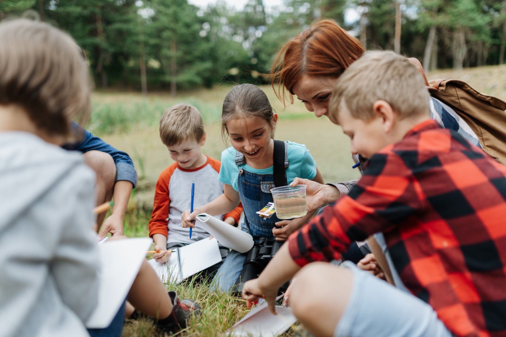
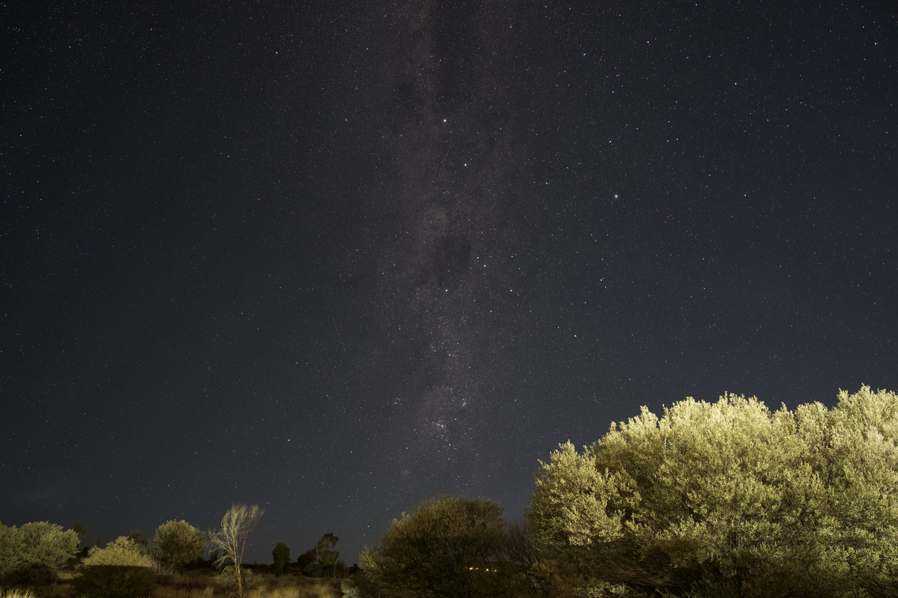

Find your
place on the trail.
Whether you teach, parent, create or fund, there's a part of this for you.

Pick your path
Four ways in. Choose the one that fits, and we'll send you everything you need to start.

Join the trail
We're getting ready to launch. Tell us who you are and we'll send you the first free lessons, challenges and ways to get involved.
Under 13? Ask a parent or teacher to sign up for you.
The form works, but sign-ups aren't connected yet, so nothing was saved. This step goes live at launch.
Good to know
Still wondering about something? Ask us when you sign up.
Is my donation tax-deductible?
Yes. Follow the Wild is a 501(c)(3) nonprofit, so your gift is tax-deductible to the extent allowed by law, and you'll get a receipt for your records. Online giving is opening soon. Sign up and we'll let you know when it's live.
Is the content really free?
Yes. Our core films, lessons and challenges are free for students, teachers and families, with no paywall.
Can my child sign up?
Kids under 13 should join through a parent, guardian or teacher. We don't collect personal information from children directly.
When do programs start?
Our first films, lesson unit and get-outside challenge are planned for the first half of our first year. Other programs follow as we grow.
How do I become an ambassador?
Choose "Creator" in the sign-up form above and we'll be in touch about our ambassador network.